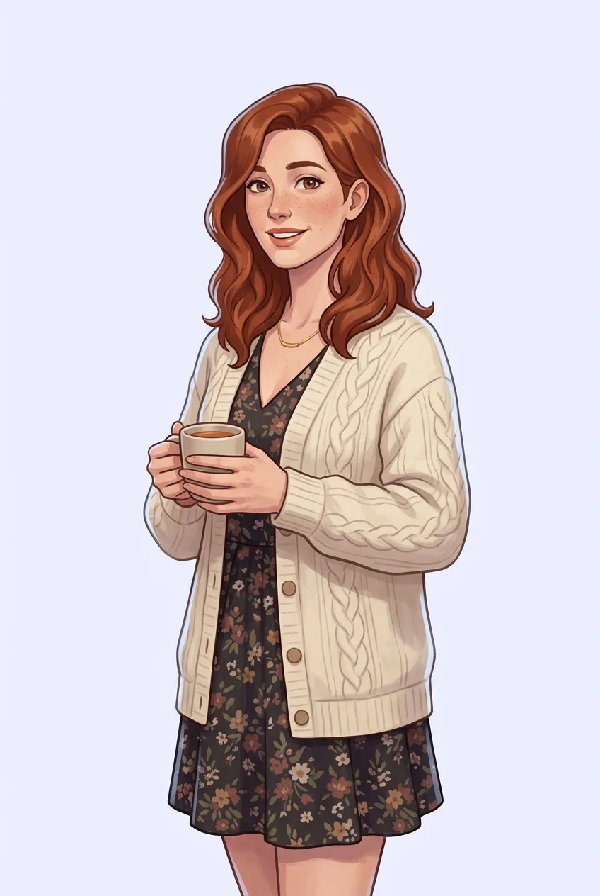

Characterly
They remember
you.
AI companions in your Discord DMs, and in every server you bring them to.
Wren
HER ARCHIVE
YOUR DMS
First 10k on Sunday. Ask how it went.
☆ Pinned
#BOOK-CLUB
Hates spoilers. Halfway through the finale.
YOUR DMS
Her old flatmate's name.
× Forgotten